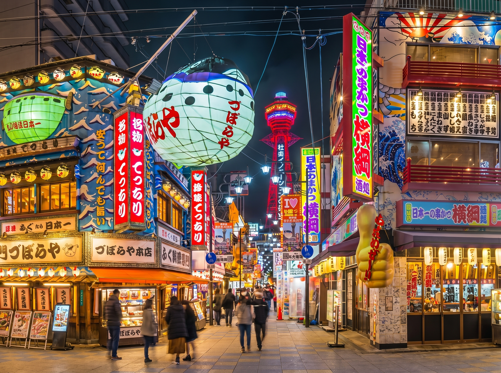
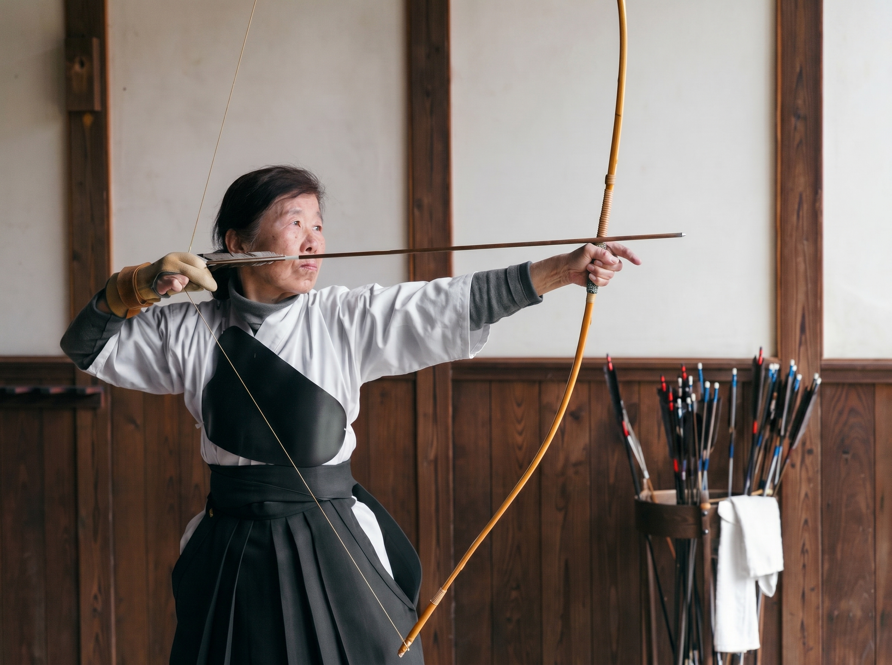

The journey

Arrive & dive in
Osaka Castle, a Dotonbori street-food tour, and a lively first night in the neon district.

Great Buddha & deer
Todai-ji and the friendly deer of Nara Park, then on to Kyoto for the evening.

Thousand torii
Fushimi Inari, Kinkaku-ji, Arashiyama bamboo and Gion — with an optional samurai or maiko evening.

Culture Day 1
Kimono dressing, Nagoya Castle and Atsuta Shrine — ending with unagi hitsumabushi.

Culture Day 2 — Kyudo
The highlight: Kyudo & calligraphy, hand-made miso-nikomi udon, Arimatsu tie-dye, Inuyama Castle.

Hot springs & Fuji
Mt. Fuji views, Lake Ashi cruise, Owakudani — and a night at an onsen ryokan.

The big city
Senso-ji, Meiji Shrine, Shibuya Crossing and teamLab — your suitcases waiting at the hotel.

Hidden & local
Free day: old-town Yanaka, Toyosu Market, and the tiny bars of Shinjuku Golden Gai.

Sayonara
Private transfer to Narita for your onward flight via Seoul.